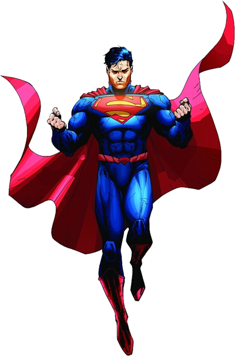
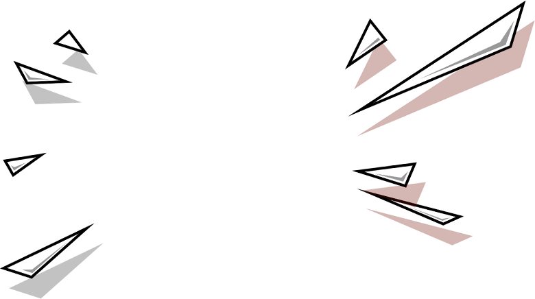
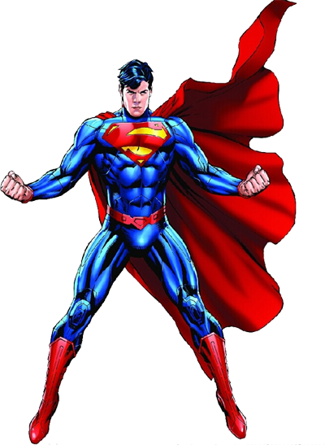

前端工程师
唐禹轩
前来
应聘

在寻找这样的我？

I'm Ready!
● 两年的Web开发经验
● 扎实的页面布局基础，根据UI设计图快速制作页面
● 具备娴熟的设计技巧和逻辑思维能力，对原生Js有一定的理解
● 积极主动沟通，推进页面优化，追求零Bug
● 热衷于完善网页视觉表现，持续改善用户体验；
It's Me
专业技能
● 熟悉w3c标准
● 熟练掌握Javascript、HTML、CSS、Ajax等前端开发技术
● 熟悉解决各大浏览器兼容问题
● 熟悉微信场景开发
● 熟悉移动端页面布局与响应式布局
● 熟悉HTML5的Vedio、Audio、Canvas等新技术
● 熟悉jQuery、Zepto等Js库
● 熟悉Bootstrap、Swiper等UI插件
项目经验
● 静树大师PC端官网
涉及技术：Javascipt、传统div+css布局、Ajax前后台数据交互、解决主流浏览器兼容问题
● 静树大师移动端官网
涉及技术：H5+CSS3布局、Touch.js插件、Zepto.js插件、解决移动设备兼容问题
● 微信场景
涉及技术：H5+CSS3布局、Swiper插件、CSS3动画、解决移动设备兼容问题
● 财务管理系统
涉及技术：响应式布局、Bootstrap插件、AngularJs
“为自己代言”
虽然，现在的我还只是一名很普通的程序猿，但是，我有一颗成为大牛的心；虽然，现在的我对原生JS理解还不是非常透彻，但是，背包里的红皮书告诉我它其实没那么难；虽然，现在的我掌握的技术还只是冰山一角，但是，我还很年轻！！！